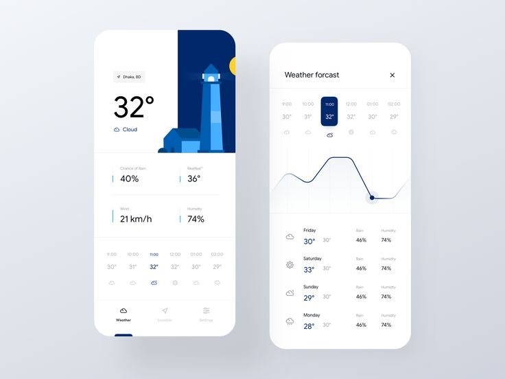
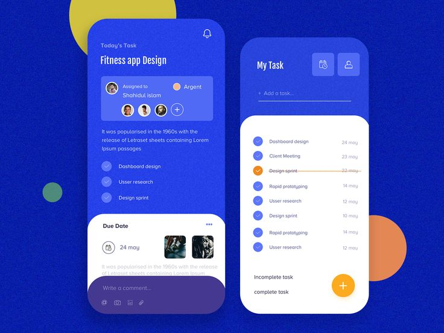
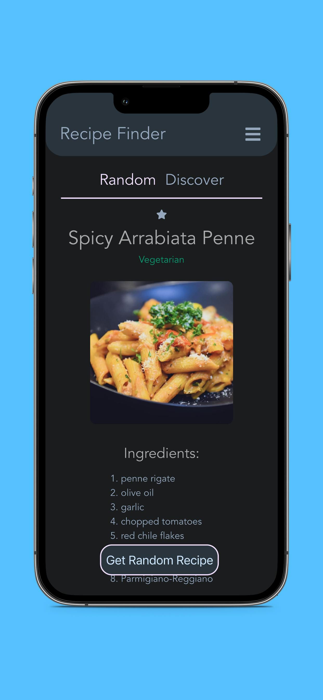

Weather App
An interactive web application that displays the current weather and weekly forecast for any city. It uses an API to retrieve up-to-date weather data and is mobile-friendly.

Task Manager
A simple task management app. It lets you add, delete, and mark tasks as complete. It saves data in your browser's local storage and provides a user-friendly interface.

Recipe Finder
A web app for searching recipes by ingredients. The user enters ingredients, and the app offers a variety of recipes with step-by-step instructions and images. Implemented using an API for retrieving recipe data.